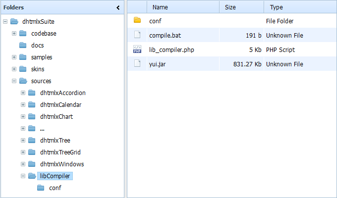
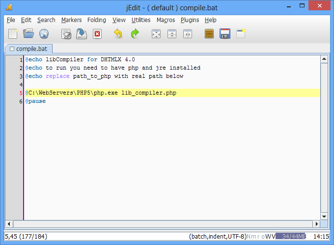
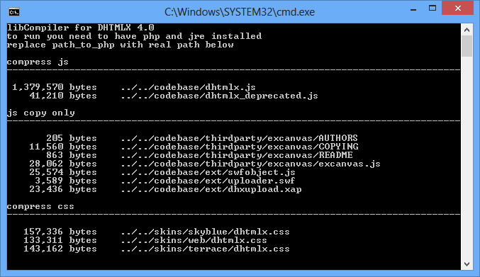
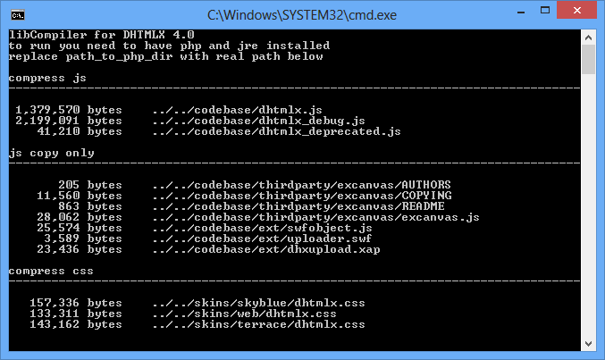
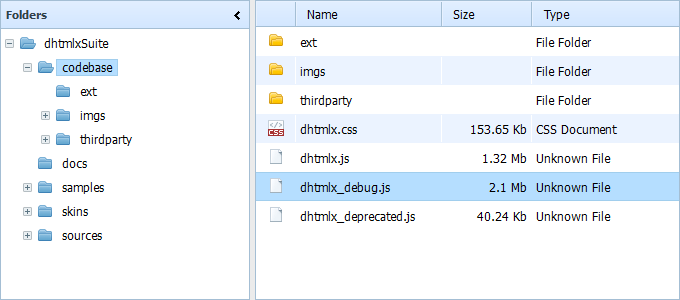

LibCompiler is a special tool that makes the process of compiling a package easier and handier.
When you download a package, e.g. dhtmlxSuite_v40_pro.zip, and unpack it, you get the following directory structure:

In order for libCompiler to work you need:
Open the file compile.bat in a text editor:
In line 5 change the path c:\path_to_php_dir\ for the path to the directory where php is installed, e.g. C:\WebServers\PHP5. In general case the result will look like this:

That’s all, now you can run the compile.bat file. Pay attention that it’ll rewrite js/css files and images in the codebase directory.
Delete the content of the codebase directory: all files and subfolders (not the directory itself!). Then libCompiler will create the necessary subdirectories and write the needed files.
The result of the compile.bat file execution is given below:

Reproduce all the steps from the Part 1 with the file compile_debug.bat. This file will make the same compilation, as in the part 1 and create the dhtmlx_debug.js file additionally.
Run the compile_debug.bat file and when its execution finishes, the file dhtmlx_debug.js will appear in the codebase directory.
The result of file execution (pay attention to dhtmlx_debug.js in logs):

The same result but from the file system side:

The dhtmlx_debug.js file has the same components while the markup is preserved, which is rather handy during the debugging.
The process is almost the same as for Windows. You need PHP and JRE installed, go to sources/libCompiler dir and exec from the command line:
php lib_compiler.php
or for debug version
php lib_compiler.php --debug=true
If your environment doesn't have a public path to java, edit lib_compiler.php and change the path to java:
$compiler = "java -jar yui.jar";
Also you need r/w access for codebase and skins dirs.
If you need to recompile dhtmlx.js with a custom code:
1) edit/update the corresponding file in the sources folder
2) run compile.bat (or compile_debug.bat)
libCompiler will recompile dhtmlx.js and dhtmlx.css files with your changes.
You can also create a custom compilation, by removing unused components from single dhtmlx.js/css
1) edit /sources/libCompiler/conf/stat_js and
remove all unused components' js files from it
2) edit /sources/libCompiler/conf/stat_css and
remove all unused components' css files from it
3) recompile suite and use target dhtmlx.js/css files
dhtmlxcommon.js is required always;
dhtmlxcore.js is required for chart and dataview;
dhtmlxcontainer.js is required for tabbar, layout, accordion and windows.